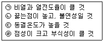

공조냉동기계기능사 (2014-07-20 기출문제)
1과목: 공조냉동안전관리
1. 고압가스 냉동제조 시설에서 압축기의 최종단에 설치한 안전장치의 작동 점검기준으로 옳은 것은? (단, 액체의 열팽창으로 인한 배관의 파열방지용 안전밸브는 제외한다.)
- 3개월에 1회 이상
- 6개월에 1회 이상
- 1년에 1회 이상
- 2년에 1회 이상
(정답률: 78%)

2. 산업재해의 직접적인 원인에 해당되지 않는 것은?
- 안전장치의 기능 상실
- 불안전한 자세와 동작
- 위험물의 취급 부주의
- 기계장치 등의 설계불량
(정답률: 69%)
3. 작업조건에 따라 착용하여야 하는 보호구의 연결로 틀린 것은?
- 고열에 의한 화상 등의 위험이 있는 작업 - 안전대
- 근로자가 추락할 위험이 있는 작업 - 안전모
- 물체가 흩날릴 위험이 있는 작업 - 보안경
- 감전의 위험이 있는 작업 – 절연용 보호구
(정답률: 92%)
4. 피로의 원인 중 외부인자로 볼 수 있는 것은?
- 경험
- 책임감
- 생활조건
- 신체적 특성
(정답률: 73%)
5. 전기용접 작업할 때 안전관리 사항 중 적합하지 않은 것은?
- 피 용접물은 완전히 접지시킨다.
- 우천 시에는 옥외작업을 하지 않는다.
- 용접봉은 홀더로부터 빠지지 않도록 정확히 끼운다.
- 옥외용접 시에는 헬멧이나 핸드실드를 사용하지 않는다.
(정답률: 94%)
6. 압축기 운전 중 이상음이 발생하는 원인으로 가장 거리가 먼 것은?
- 기초 볼트의 이완
- 피스톤 하부에 오일이 고임
- 토출밸브, 흡입밸브의 파손
- 크랭크 샤프트 및 피스톤 핀의 마모
(정답률: 80%)
7. 보일러 파열사고의 원인으로 가장 거리가 먼 것은?
- 역화의 발생
- 강도 부족
- 취급 불량
- 계기류의 고장
(정답률: 57%)
8. 작업장에서 계단을 설치할 때 계단의 폭은 최소 얼마이상으로 하여야 하는가? (단, 급유용·보수용·비상용 계단 및 나선형 계단이 아닌 경우)
- 0.5m
- 1m
- 2m
- 5m
(정답률: 82%)
9. 다음의 안전·보건표지가 의미하는 것은?
- 사용금지
- 보행금지
- 탑승금지
- 출입금지
(정답률: 95%)
10. 가스용접 작업의 안전사항으로 틀린 것은?
- 기름 묻은 옷은 인화의 위험이 있으므로 입지 않도록 한다.
- 역화 하였을 때에는 산소밸브롤 조금 더 연다.
- 역화의 위험을 방지하기 위하여 역화 방지기를 사용하도록 한다.
- 밸브를 열 때는 용기 앞에서 몸을 피하도록 한다.
(정답률: 93%)
11. 드릴로 뚫어진 구멍의 내벽이나 절단한 관의 내벽을 다듬어서 구멍의 치수를 정확하게 하고, 구멍 내면을 다듬는 구멍 수정용 공구는?
- 평줄
- 리머
- 드릴
- 렌치
(정답률: 89%)
12. 드릴링 머신의 작업 시 일감의 고정 방법에 관한 설명으로 틀린 것은?
- 일감이 작을 때 - 바이스로 고정
- 일감이 클 때 – 볼트와 고정구(클램프) 사용
- 일감이 복잡할 때 – 볼트와 고정구(클램프) 사용
- 대량 생산과 정밀도를 요구할 때 – 이동식 바이스 사용
(정답률: 82%)
13. 목재 화재 시에는 물을 소화제로 이용하는데, 주된 소화 효과는?
- 제거효과
- 질식효과
- 냉각효과
- 억제효과
(정답률: 83%)
14. 냉동 장치 내에 공기가 유입되었을 경우 나타나는 현상으로 가장 거리가 먼 것은?
- 응축 압력이 높아진다.
- 압축비가 높게 되어 체적 효율이 증가된다.
- 냉매와 증발관과의 열전달을 방해하여 냉동능력이 감소된다.
- 공기침입 시 수분도 혼입되어 프레온 냉동 장치에서 부식이 일어난다.
(정답률: 78%)
15. 보호구 사용 시 유의사항으로 틀린 것은?
- 작업에 적절한 보호구를 선정한다.
- 작업장에는 필요한 수량의 보호구를 비치한다.
- 보호구는 사용하는데 불편이 없도록 관리를 철저히 한다.
- 작업을 할 때 개인에 따라 보호구는 사용 안 해도 된다.
(정답률: 96%)
2과목: 냉동기계
16. 강관의 보온 재료로 가장 거리가 먼 것은?
- 규조토
- 유리면
- 기포성 수지
- 광명단
(정답률: 70%)
17. 이론상의 표준냉동사이클에서 냉매가 팽창밸브를 통과할 때 변하는 것은?(오류 신고가 접수된 문제입니다. 반드시 정답과 해설을 확인하시기 바랍니다.)
- 엔탈피와 압력
- 온도와 엔탈피
- 압력과 온도
- 엔탈피와 비체적
(정답률: 78%)
18. 냉동 장치에서 자동제어를 위해 사용되는 전자밸브(Solenoide valve)의 역할로 가장 거리가 먼 것은?
- 액압축 방지
- 냉매 및 브라인 흐름 제어
- 용량 및 액면 제어
- 고수위 경보
(정답률: 80%)
19. 강관의 나사식 이음쇠 중 벤드의 종류에 해당하지 않는 것은?
- 암수 롱 벤드
- 45º 롱 벤드
- 리턴 벤드
- 크로스 벤드
(정답률: 54%)
20. 압축기 종류에 따른 정상적인 유압이 아닌 것은?
- 터보 = 정상저압 ＋ 6㎏/cm2
- 입형저속 = 정상저압 ＋ 0.5 ∼ 1.5㎏/cm2
- 고속다기통 = 정상저압 ＋ 1.5 ∼ 3㎏/cm2
- 고속다기통 = 정상저압 ＋ 6㎏/cm2
(정답률: 67%)
21. 암모니아 냉동장치에서 실린더 직경 150㎜, 행정이 90㎜, 회전수 1170rpm, 기통수 6기통 일 때, 법정 냉동능력(RT)은? (단, 냉매상수는 8.4이다.)
- 약 98.2
- 약 79.7
- 약 59.2
- 약 38.9
(정답률: 58%)
22. 동결장치 상부에 냉각코일을 집중적으로 설치하고 공기를 유동시켜 피 냉각물체를 동결시키는 장치는?
- 송풍 동결장치
- 공기 동결장치
- 접촉 동결장치
- 브라인 동결장치
(정답률: 63%)
23. 건포화증기를 압축기에서 압축시킬 경우 토출되는 증기의 상태는?
- 과열증기
- 포화증기
- 포화액
- 습증기
(정답률: 61%)
24. 냉동기용 전동기의 시동 릴레이는 전동기 정격속도의 얼마에 달할 때까지 시동권선에 전류를 흐르게 하는가?
- 1/2
- 2/3
- 1/4
- 1/5
(정답률: 71%)
25. 열전달율에 대한 설명 중 옳은 것은?
- 열이 관벽 또는 브라인(Brine) 등의 재질 내에서의 이동을 나타내며, 단위는 kcal/m·h·℃이다.
- 액체면과 기체면 사이의 열의 이동을 나타내며, 단위는 kcal/m·h·℃이다.
- 유체와 고체 사이의 열의 이동을 나타내며, 단위는 kcal/m2·h·℃이다.
- 유체와 기체 사이의 한정된 열의 이동을 나타내며, 단위는 kcal/m3·h·℃이다.
(정답률: 61%)
26. 표준냉동사이클의 증발 과정동안 압력과 온도는 어떻게 변화 하는가?
- 압력과 온도가 모두 상승한다.
- 압력과 온도가 모두 일정하다.
- 압력은 상승하고, 온도는 일정하다.
- 압력은 일정하고, 온도는 상승한다.
(정답률: 64%)
27. 흡수식 냉동장치에서 냉매로 암모니아를 사용할 때, 흡수제로 가장 적당한 것은?
- LiBr
- CaCl2
- LiCl
- H2O
(정답률: 75%)
28. 냉동 장치에서 다단 압축을 하는 목적으로 옳은 것은?
- 압축비 증가와 체적 효율 감소
- 압축비와 체적 효율 증가
- 압축비와 체적 효율 감소
- 압축비 감소와 체적 효율 증가
(정답률: 59%)
29. 동력의 단위 중 값이 큰 순서대로 바르게 나열된 것은?
- 1kW > 1PS > 1kgf·m/sec > 1kcal/h
- 1kW > 1kcal/h > 1PS > 1kgf·m/sec
- 1PS > 1kgf·m/sec > 1kcal/h > 1kW
- 1PS > 1kgf·m/sec > 1kW > 1kcal/h
(정답률: 73%)
30. 암모니아 냉동장치에 대한 설명 중 틀린 것은?
- 윤활유에는 잘 용해되나, 수분과 용해성이 극히 작다.
- 연소성, 폭발성, 독성 및 악취가 있다.
- 전열 성능이 양호하다.
- 프레온 냉동장치에 비해 비열비가 크다.
(정답률: 83%)
31. 온도식 자동팽창 밸브에서 감온통의 부착위치는?
- 응축기 출구
- 증발기 입구
- 증발기 출구
- 수액기 출구
(정답률: 74%)
32. 냉동장치 운전에 관한 설명으로 옳은 것은?
- 흡입압력이 저하되면 토출가스 온도가 저하된다.
- 냉각수온이 높으면 응축압력이 저하된다.
- 냉매가 부족하면 증발압력이 상승한다.
- 응축압력이 상승되면 소요동력이 상승한다.
(정답률: 46%)
33. 다음 보기 중 브라인의 구비 조건으로 적절한 것은?

- ㉠, ㉡
- ㉠, ㉢
- ㉡, ㉢
- ㉠, ㉣
(정답률: 78%)
34. 냉동능력이 5냉동톤(한국냉동톤)이며, 압축기의 소요동력이 5마력(PS)일 때 응축기에서 제거하여야 할 열량(kcal/h)은?
- 약 18790kcal/h
- 약 19760kcal/h
- 약 20900kcal/h
- 약 21100kcal/h
(정답률: 57%)
35. 동일한 증발온도일 경우 간접 팽창식과 비교하여 직접 팽창식 냉동장치에 대한 설명으로 틀린 것은?
- 소요동력이 적다.
- 냉동톤(RT)당 냉매 순환량이 적다.
- 감열에 의해 냉각시키는 방법이다.
- 냉매 증발온도가 높다.
(정답률: 56%)
36. 증발기에 대한 설명으로 옳은 것은?
- 증발기입구냉매온도는 출구냉매온도보다 높다.
- 탱크형 냉각기는 주로 제빙용에 쓰인다.
- 1차 냉매는 감열로 열을 운반한다.
- 브라인은 무기질이 유기질보다 부식성이 작다.
(정답률: 59%)
37. 냉동기의 스크류 압축기(screw compressor)에 대한 특징으로 틀린 것은?
- 암·숫나사 2개의 로터나사의 맞물림에 의해 냉매가스를 압축한다.
- 왕복동식 압축기와 동일하게 흡입, 압축, 토출의 3행정으로 이루어진다.
- 액격 및 유격이 비교적 크다.
- 흡입·토출 밸브가 없다.
(정답률: 57%)
38. 증발식 응축기에 대한 설명 중 옳은 것은?
- 냉각수의 사용량이 많아 증발량도 커진다.
- 응축능력은 냉각관 표면의 온도와 외기 건구온도차에 비례한다.
- 냉각수량이 부족한 곳에 적합하다.
- 냉매의 압력강하가 작다.
(정답률: 52%)
39. 시간적으로 변화하지 않는 일정한 입력신호를 단속신호로 변환하는 회로로서 경보용 부저 신호에 많이 사용하는 것은?
- 선택회로
- 플리커회로
- 인터로크회로
- 자기유지회로
(정답률: 65%)
40. 저압 차단 스위치의 작동에 의해 장치가 정지 되었을 때, 행하는 점검사항 중 가장 거리가 먼 것은?
- 응축기의 냉각수 단수 여부 확인
- 압축기의 용량제어 장치의 고장 여부 확인
- 저압측 적상 유무 확인
- 팽창밸브의 개도 점검
(정답률: 46%)
41. 왕복동 압축기와 비교하여 원심 압축기의 장점으로 틀린 것은?
- 흡입밸브, 토출밸브 등의 마찰부분이 없으므로 고장이 적다.
- 마찰에 의한 손상이 적어서 성능저하가 적다.
- 저온장치에는 압축단수를 1단으로 가능하다.
- 왕복동 압축기에 비해 구조가 간단하다.
(정답률: 59%)
42. 냉동장치에서 응축기나 수액기 등 고압부에 이상이 생겨 점검 및 수리를 위해 고압측 냉매를 저압측으로 회수하는 작업은?
- 펌프아웃(pump out)
- 펌프다운(pump down)
- 바이패스아웃(bypass out)
- 바이패스다운(bypass down)
(정답률: 56%)
43. 응축 온도가 13℃이고, 증발온도가 –13℃인 이론적 냉동 사이클에서 냉동기의 성적 계수는?
- 0.5
- 2
- 5
- 10
(정답률: 54%)
44. 입형 셸 앤 튜브식 응축기의 특징으로 가장 거리가 먼 것은?
- 옥외 설치가 가능하다.
- 액냉매의 과냉각이 쉽다.
- 과부하에 잘 견딘다.
- 운전 중 청소가 가능하다.
(정답률: 47%)
45. 동관을 구부릴 때 사용되는 동관전용 벤더의 최소곡률 반지름은 관지름의 약 몇 배인가?
- 약 1~2배
- 약 4~5배
- 약 7~8배
- 약 10~11배
(정답률: 68%)
3과목: 공기조화
46. 사무실의 공기조화를 행할 경우, 다음 중 전체 열부하에서 가장 큰 비중을 차지하는 항목은?
- 바닥에서 침입하는 열과 재실자로부터의 발생열
- 문을 열 때 들어오는 열과 문틈으로 들어오는 열
- 재실자로부터의 발생 열과 조명기구로부터의 발생열
- 벽, 창, 천정 등에서 침입하는 열과 일사에 의해 유리창을 투과하여 침입하는 열
(정답률: 77%)
47. 실내의 오염된 공기를 신선한 공기로 희석 또는 교환하는 것을 무엇이라고 하는가?
- 환기
- 배기
- 취기
- 송기
(정답률: 91%)
48. 보일러 스케일 방지책으로 적절하지 않은 것은?
- 청정제를 사용한다.
- 보일러 판을 미끄럽게 한다.
- 급수 중의 불순물을 제거한다.
- 수질분석을 통한 급수의 한계 값을 유지한다.
(정답률: 78%)
49. 냉방부하 계산 시 인체로부터의 취득열량에 대한 설명으로 틀린 것은?
- 인체 발열부하는 작업 상태와 관계없다.
- 땀의 증발, 호흡 등을 잠열이라 할 수 있다.
- 인체의 발열량은 재실 인원수와 현열량과 잠열량으로 구한다.
- 인체 표면에서 대류 및 복사에 의해 방사되는 열은 현열이다.
(정답률: 72%)
50. 보일러 송기장치의 종류로 가장 거리가 먼 것은?
- 비수방지관
- 주증기밸브
- 증기헤더
- 화염검출기
(정답률: 81%)
51. 건물 내 장소에 따라 부하변동의 상황이 달라질 경우, 구역구분을 통해 구역마다 공조기를 설치하여 부하처리를 하는 방식은?(오류 신고가 접수된 문제입니다. 반드시 정답과 해설을 확인하시기 바랍니다.)
- 단일덕트 재열방식
- 단일덕트 변풍량방식
- 단일덕트 정풍량방식
- 단일덕트 각층유닛방식
(정답률: 50%)
52. 복사난방에 대한 설명으로 틀린 것은?
- 설비비가 적게 든다.
- 매립 코일이 고장나면 수리가 어렵다.
- 외기침입이 있는 곳에도 난방감을 얻을 수 있다.
- 실내의 벽, 바닥 등을 가열하여 평균복사온도를 상승시키는 방법이다.
(정답률: 74%)
53. 취출구의 종류 중 취출 기류의 방향조정이 가능하고, 댐퍼가 있어 풍량조절이 가능하며, 공기저항이 크고, 공장, 주방 등의 국소 냉방에 사용되는 것은?
- 다공판형
- 베인격자형
- 펑커루버형
- 아네모스탯형
(정답률: 54%)
54. 공기조화용 에어필터의 여과효율을 측정하는 방법으로 가장 거리가 먼 것은?
- 중량법
- 비색법
- 계수법
- 용적법
(정답률: 63%)
55. 열원이 분산된 개별공조방식에 대한 설명으로 틀린 것은?
- 써모스탯이 내장되어 개별제어가 가능하다.
- 외기냉방이 가능하여 중간기에는 에너지 절약형이다.
- 유닛에 냉동기를 내장하고 있어 부분운전이 가능하다.
- 장래의 부하증가, 증축 등에 대해 쉽게 대응할 수 있다.
(정답률: 62%)
56. 실내에서 폐기되는 공기 중의 열을 이용하여 외기 공기를 예열하는 열 회수방식은?
- 열펌프 방식
- 팬코일 방식
- 열파이프 방식
- 런 어라운드 방식
(정답률: 63%)
57. 유체의 속도가 15m/s일 때, 이 유체의 속도수두는?
- 약 5.1m
- 약 11.1m
- 약 15.5m
- 약 20.4m
(정답률: 52%)
58. 흡수식 감습장치에 주로 사용하는 흡수제는?
- 실리카겔
- 염화리튬
- 아드 소울
- 활성 알루미나
(정답률: 66%)
59. 습공기의 엔탈피에 대한 설명으로 틀린 것은?
- 습공기가 가열되면 엔탈피가 증가된다.
- 습공기 중에 수증기가 많아지면 엔탈피는 증가한다.
- 습공기의 엔탈피는 온도, 압력, 풍속의 함수로 결정된다.
- 습공기 중의 건공기 엔탈피와 수증기 엔탈피의 합과 같다.
(정답률: 47%)
60. 공기조화기의 자동제어 시 제어요소가 바르게 나열된 것은?
- 온도제어 – 습도제어 - 환기제어
- 온도제어 – 습도제어 - 압력제어
- 온도제어 – 차압제어 - 환기제어
- 온도제어 – 수위제어 - 환기제어
(정답률: 81%)